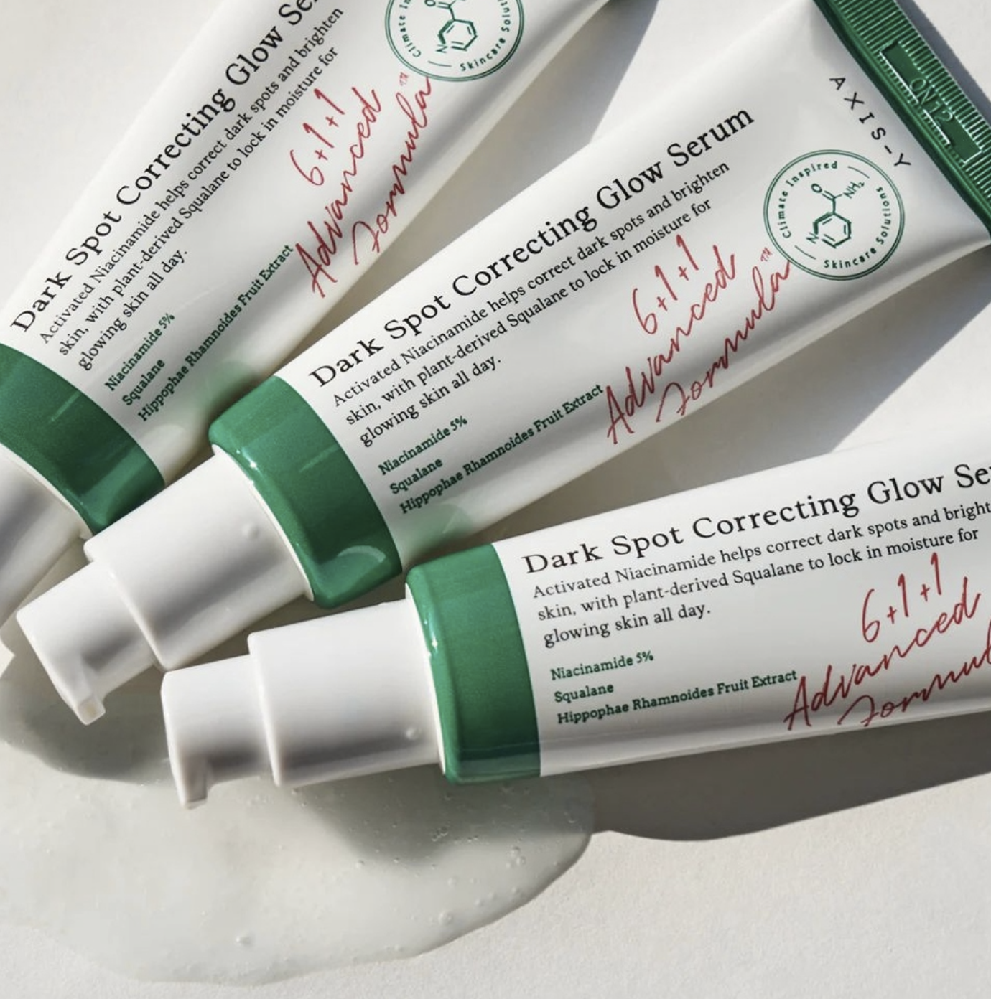

Imagine your skincare routine as a superhero cape for your skin. By spending just a few minutes each day cleaning away dirt and oils, you're giving it the superpowers it needs to stay healthy and happy. But here's the secret ingredient: consistency. Like leveling up in a game, you gotta stick with it to see those awesome results. Let’s talk about morning skincare routine for teenagers who have OILY COMBINATION skin types:
Cleansing
Cleansing your face at night removes any dirt and oil you accumulate throughout the day. It's a vital step in your skincare routine, so be sure to wash your face thoroughly. It's important to pick a cleanser that suits your skin type. Avoid bar cleansers since they can harbor bacteria. If you have sensitive skin, skip foam cleansers. Opt for gel-based or oil-based cleansers if you have oily or combination skin.
Before you start cleansing, make sure to wash your hands thoroughly. You wouldn't want to cleanse your face with dirty hands, right? When washing your face, be gentle and avoid scrubbing too hard. Stick to lukewarm water for the best results; hot water can make your skin more sensitive, while cold water might trap dirt and oils. Skip exfoliation since teen skin can naturally regenerate itself. Also, do not use a towel to dry your face to prevent transferring bacteria.
Toner
It is the same as the morning skincare routine. Depending on their ingredients, toners can help hydrate the skin or remove leftover oil and dirt. The primary goal of using a toner is to enhance the effectiveness of skincare products used afterwards. For best results, apply the toner on slightly damp skin and allow it to absorb for five minutes before applying any additional products. It's crucial to note that teenage skin is highly sensitive, so every product used must be specifically formulated for sensitive skin.

Serum
This part also is the same as the morning skincare routine. Once you've applied toner, it's time to show your skin some extra love with a serum that matches your skin type and concerns. Serums come in all shapes and sizes, and they work magic in different ways. Got dry skin? Reach for a moisturizing serum. Dealing with acne scars? Try antioxidant serums like vitamin C, or niacinamide. Remember, everyone's skin is unique, so feel free to tweak this step or skip it altogether if it doesn't suit your vibe
Moisturizer
Think of moisturizing as the star player in your nightly skincare routine—it's like giving your skin a nourishing meal. Just like our bodies need vitamins and minerals to thrive, our skin needs moisture to regenerate and stay healthy. Don't overlook your neck when applying moisturizer. Be gentle and use upward strokes giving yourself a little massage as you go upwards from your neck. I recommend using Physiogel.
Simple Night Skincare Summary for OILY COMBINATION SkinMore
Here is a simple summary of the night skincare routine for OILY COMBINATION skin.